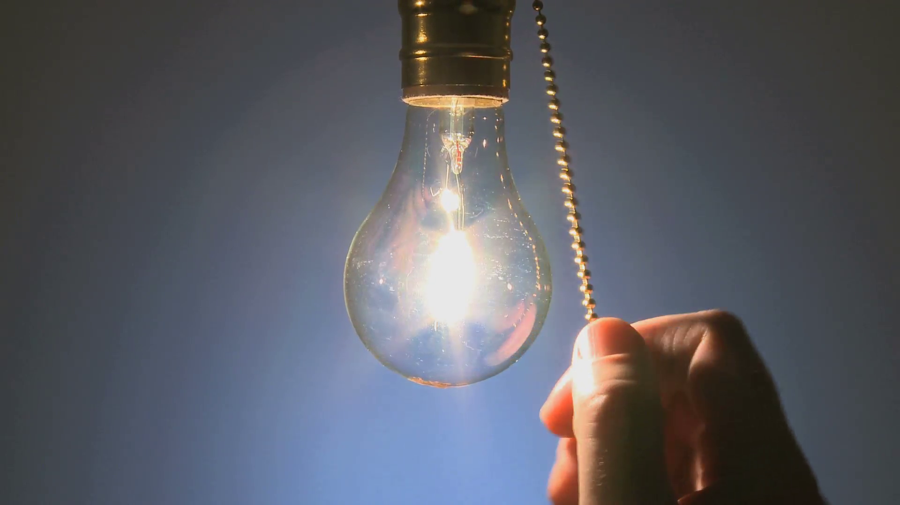
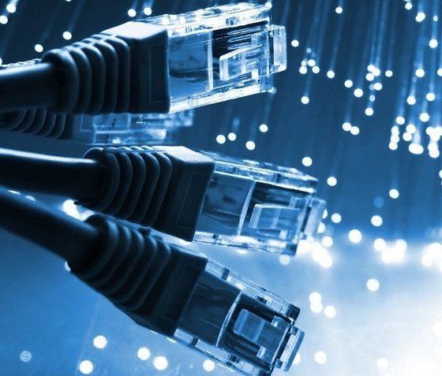
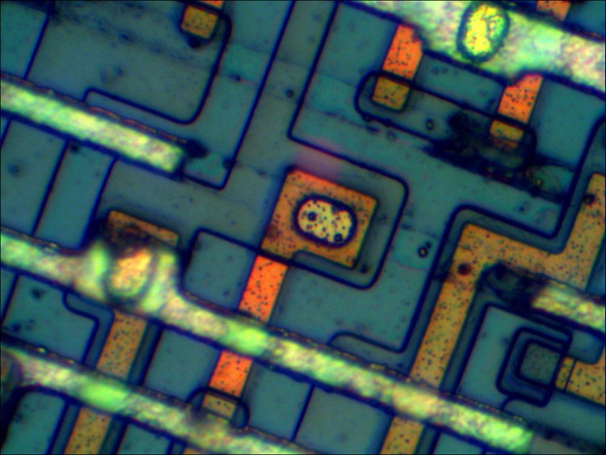

Фотон вместо электрона
Оптический компьютер ― это устройство (пока скорее гипотетическое), которое в качестве единицы (бита) информации использует фотон. В обычном компьютере в качестве бита информации используется электрон, а если точнее ― заряд электрона: если через контакт протек некоторый минимальный заряд, то это единица, а если протек заряд меньше порогового, то ноль. Заменяем электрон на фотон, заряд на интенсивность электромагнитного поля, получается так называемый классический оптический компьютер.
Фотон — фундаментальная частица, квант электромагнитного излучения (в узком смысле — света) в виде поперечных электромагнитных волн и переносчик электромагнитного взаимодействия. Это безмассовая частица, способная существовать, только двигаясь со скоростью света.


Принцип работы
В качестве входного порта оптического чипа выступает набор оптических волноводов. Через эти волноводы на вход поступает оптический сигнал, который можно представить в качестве набора нулей и единиц. Далее этот сигнал преобразуется заданным образом в оптической схеме посредством различных оптических элементов: резонаторов или волноводов. Преобразованный сигнал поступает на выходной порт ― он, опять же, может быть представлен в качестве массива нулей и единиц.
Преимущество
Есть ряд областей, в которых применение оптических компьютеров было бы уже сейчас крайне оправданным, хотя вряд ли стоит ждать, что они скоро повсеместно заменят привычные нам электронные устройства. Выгода в том, что фотоны являются идеальным передатчиком информации. Оптический сигнал в волокне может переноситься на десятки километров практически без затухания и искажений. Кроме того, фотоны оптического диапазона обладают очень большой пропускной способностью: эта величина определяет, сколько битов информации можно упаковать в импульс определенной длительности.

Уже сейчас для передачи информации на большие расстояния используют оптоволокно. Однако пока данные, прошедшие по оптоволокну, обрабатываются с помощью электронных устройств. Постоянный перевод сигнала из оптического в электронный тратит время и энергию. Было бы здорово убрать этот переход и обрабатывать пришедший сигнал также оптическими методами. Уже есть системы, которые позволяют это частично делать, но до создания полноценного оптического компьютера пока далеко.
Энергоэффективность
В привычных нам устройствах течет электрический ток, что приводит к выделению тепла - потраченной впустую энергии. Более того, чтобы устройство не перегрелось, надо потратить еще больше энергии на его охлаждение. В итоге энергопотребление больших датацентров в 2018 году составило примерно 200 ТВт·ч, что равно примерно одному проценту от всего энергопотребления в мире, и растет оно довольно быстро. Фотоны не заряжены, ток не течет, нагрева нет, поэтому, по крайней мере, некоторые вычислительные операции в смысле энергопотребления можно делать практически задаром.
Проблемы
Проблем пока еще хватает. Во-первых, если нужно выполнить нелинейные операции например, логические операции «И» или «ИЛИ», которые часто встречаются в компьютерных программах, то надо обеспечить взаимодействие фотонов друг с другом. Незаряженные частицы взаимодействуют плохо, нужны обычно большие интенсивности, которые уже приводят к нагреву и снижают энергоэффективность. Во-вторых, фотоны постоянно норовят куда-то улететь, поэтому очень трудно реализовать устройства, хранящие оптическую информацию даже какое-то минимальное время (даже микросекунды было бы очень хорошо, но пока таких устройств практически нет). Необходимо реализовывать интерфейсы фотонных систем с запоминающими устройствами (магнитными или электронными), которые бы были быстрыми и энергоэффективными.
Еще одной проблемой является миниатюризация. Характерный размер одного электронного транзистора ― примерно 10 нанометров. Поэтому на сантиметре поверхности чипа можно «упаковать» сотни миллионов транзисторов, что обеспечивает быстродействие электронных компьютеров. Размеры оптических элементов определяются длиной волны фотона ― порядка одного микрона. Оптические транзисторы, очевидно, не будут такими же компактными, как электронные, что сужает область их применений.
